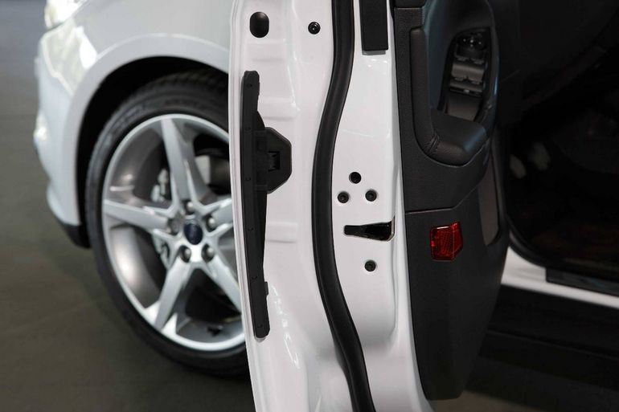
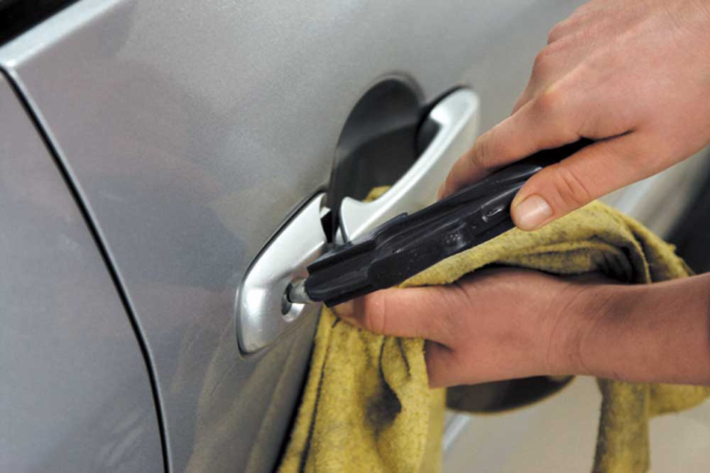

С течением времени даже самый надежный автомобильный замок может засориться и выйти из строя. Происходит это по самым различным причинам. Однако вне зависимости от эксплуатации и вашей аккуратности через несколько лет замки могут засориться пылью, грязью с металлическими частицами и так далее.
Профессиональная продувка замков позволяет очистить их от всевозможных загрязнений, начиная от пыли и заканчивая металлической стружкой. Как только такие загрязнения попадают в замок, со временем они его засоряют настолько, что его работоспособность оказывается под угрозой. Решить эту проблему можно только обратившись в специализированную компанию, которая предоставляет подобные услуги.
Можно ли сделать продувку замков самостоятельно? Если у вас имеется специальное оборудование и хорошие знания в этом деле, то, конечно же, можно. Однако не стоит, потому что в случае неудачи вы можете вывести из строя автомобильные замки. А замена обойдется вам довольно дорого. Так же зачем же тратить лишние деньги, когда можно сэкономить силы, время и средства? Лучше обратится к настоящим профессионалам, которые за считанные минуты сделают нужную работу по очистке и продувке замков от самых разнообразных загрязнений. Уже через несколько минут вы сможете продолжить свой путь и наслаждаться прекрасной работой замков.
Наномойка Антидождь Инновационный автошампунь Полировка «Жидкое стекло»